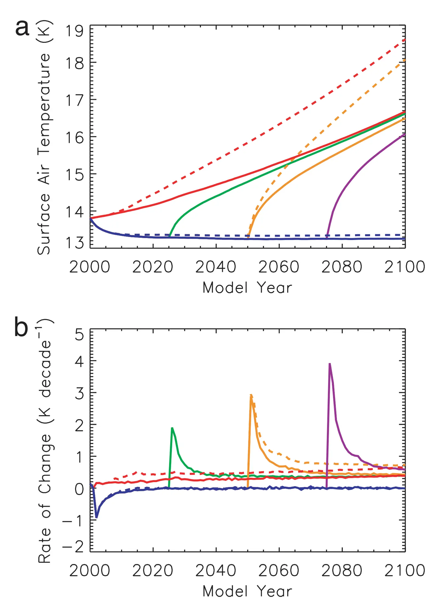

Transient climate-carbon simulations of planetary geoengineering
Key finding. The climate system responds quickly to artificially reduced insolation, so there may be little cost to delaying deployment of geoengineering until dangerous climate change is imminent; geoengineered spatial temperature patterns are comparable to preindustrial temperatures, though precipitation patterns are not.

What question did this research address?
Proposals to counteract greenhouse warming by managing incoming sunlight had been assessed mostly in equilibrium. That leaves open how the system behaves during the transition — how fast it responds when the intervention starts, and what the carbon cycle does meanwhile.
This paper asked what the transient climate response to geoengineering looks like under a business-as-usual emissions scenario, using a model with an interactive carbon cycle so that climate and carbon respond to each other.
What did we find?
The simulations use an intermediate-complexity global climate model including an interactive carbon cycle, run under a business-as-usual CO2 emissions scenario.
The response to reduced insolation is fast. Because the climate reaches the intended state quickly once the intervention begins, there is little penalty for waiting rather than deploying pre-emptively.
Spatial patterns of temperature under geoengineering are comparable with preindustrial temperatures. Precipitation patterns are not — the correspondence that holds for temperature does not extend to the hydrological cycle.
Carbon sinks increase under geoengineering. Because the intervention masks warming, CO2 continues to drive carbon uptake without the offsetting suppression that rising temperatures would otherwise cause.
Why does it matter?
The speed of response cuts both ways, and this is the paper's most consequential implication. If the climate reaches its geoengineered state within years of starting, it will also leave that state within years of stopping — which is the origin of the concern now known as termination shock.
The finding that carbon sinks strengthen is easy to miss and easy to misread. It is not a co-benefit so much as a reminder that geoengineering masks warming while leaving the CO2 in place, so the underlying commitment continues to accumulate behind the intervention.
The temperature-precipitation asymmetry sets a limit on what "restoring the climate" could mean. A world whose temperature resembles the preindustrial one but whose rainfall does not is not the preindustrial climate.
Citation, data, and code
H. Damon Matthews and Ken Caldeira (2007). Transient climate-carbon simulations of planetary geoengineering. Proceedings of the National Academy of Sciences 104, 9949-9954.